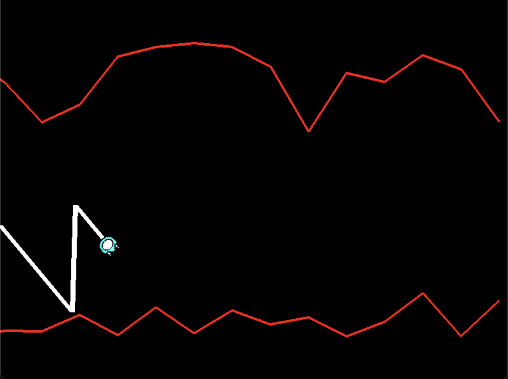
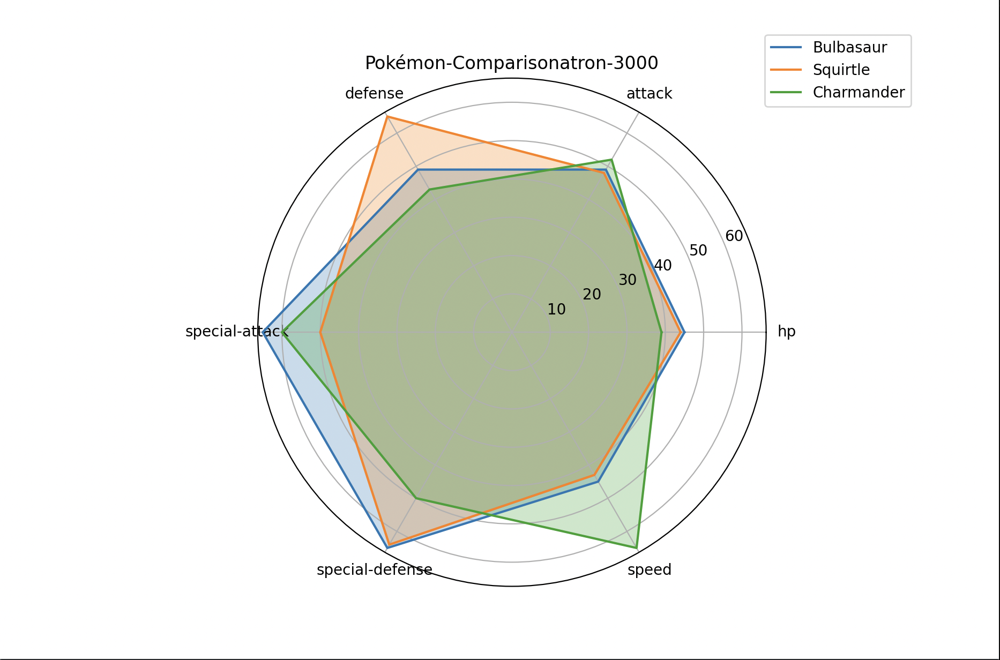
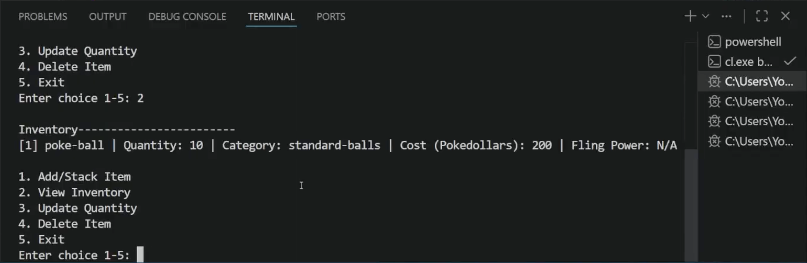

Projects

Wave Wave
Wave Wave is my Chapter 2 project from Computer Programming I. This program is Geometry Dash inspired and takes inspiration from the wave gamemode specifically. The player can adjust their playing experience by using the up and down arrow keys to adjust the speed, the left and right arrow keys to adjust the difficulty, and the W and S keys to adjust the wave angle.
GitHub
Pokemon-Comparisonatron-3000
The Pokemon-Comparisonatron-3000 is a program that allows the user to compare the stats of as many Pokemon as they'd like. It first asks the user to enter the number of Pokemon they want to view, and will then prompt for each of the Pokemons' names. The Pokemon stats are retrieved from PokeAPI endpoints for each Pokemon, and are then displayed to the user via a radar chart. The stats displayed are attack, defense, special attack, special defense, hp, and speed.
GitHubSkype Offline Session Patch
This program here is a bit different from other stuff I worked on, in which those projects were for in-class assignments. This here is something that came out of my own time. I wanted to work with the Skype community and attempt to revive one of the older clients. However, this was very difficult due to proprietary protocols and code encryptions, and eventually I decided to pivot to making my own client, which I also never finished. However, I did begin work on a web version of Skype that was included with Windows 8, in which all the code and assets are unencrypted and free to access, making reverse engineering and documentation a lot easier.
GitHub
Pokemon Inventory Manager
The Pokemon Inventory Manager is my Software Design final project. The program has five options: Add/Stack items, modify the quantity of an item, remove an item, view your current inventory, and exit. Users add items and the item's description data is retrieved from PokeAPI via the WinINet library, a windows internet library built into the operating system. It serves as an easy and accessible way for users to manage their visual Pokemon inventory, without having to open their bag in the game (essentially, you have two screens you're playing on).
GitHub